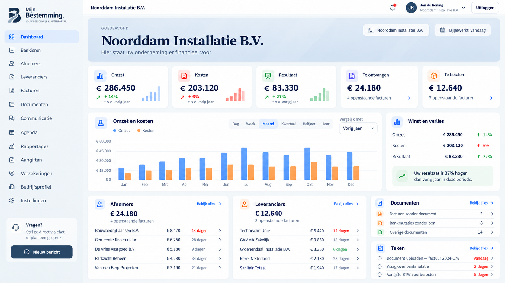

1-op-1 Traject
Persoonlijke begeleiding met Ed, gericht op jouw groei, balans en volgende stap in ondernemen en leven.
Lees meerBESTEMD combineert een modern administratiekantoor met persoonlijke begeleiding, inspiratie en praktische tools. Voor ondernemers die willen groeien, in bedrijf én in leven.
BESTEMD combineert een modern administratiekantoor met persoonlijke begeleiding, inspiratie en praktische tools.

Een inspirerend en praktisch boek over koers, keuzes en een leven dat écht bij je past – privé en als ondernemer.
Persoonlijke trajecten voor ondernemers die willen groeien, meer balans willen ervaren en bewuster willen leven. Met Ed aan je zijde, in de vorm die bij jou past.
Persoonlijke begeleiding met Ed, gericht op jouw groei, balans en volgende stap in ondernemen en leven.
Lees meerGroeien samen met een kleine, betrokken groep ondernemers. Met verdieping, uitwisseling en praktische stappen.
AanmeldenEen inspirerende retraite op een bijzondere plek in Spanje. Tijd, rust en ruimte om te reflecteren en richting te geven.
Lees meerWij houden het overzicht. Jij richt je op je onderneming.
Facturen, bonnetjes en bankmutaties netjes verwerkt.
Meer informatieAangiften en deadlines goed geregeld.
Meer informatieGrip op je cijfers en ruimte om vooruit te kijken.
Meer informatieIn je eigen online omgeving vind je documenten, rapportages en contact.
Open Mijn Bestemming
Ed Beemsterboer combineert zijn financiële achtergrond met persoonlijke begeleiding. Zijn vraag is simpel: waar wil jij naartoe?
Leer ons kennenAls je je administratie goed geregeld wilt hebben en persoonlijk contact waardeert, maken we graag kennis.
Na de inventarisatie bespreken we jouw werkzaamheden en het bijbehorende maandbedrag.

Af en toe nieuws en ideeën van BESTEMD.